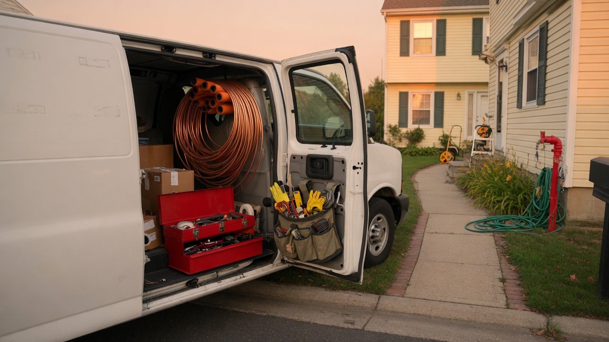

Automatically capture data from receipt images emailed to the shop inbox.
Note: This document covers an automation created for demonstration purposes. Some
of the information in this document is implied or inaccurate due to the fictional business scenario.

Who uses itTechs & office
TriggerNew shop email
Writes toJob Receipts sheet
Confirms byReturn email
Work order
What this replaces
Plumbing Company office staff used to manually enter receipt data into a Google Sheet. This automation
eliminates the need for this task, saving time and reducing errors.
How It Works
A live Make.com scenario watches the dedicated Gmail inbox, pulls the attached
image, reads the receipt with optical character recognition (OCR), then both adds
a new row to the Google Sheet and sends a confirmation email back to the sender.
1
Gmail watches the inbox
Every new message to the receipts address starts a run, ignoring emails that do not
have an attachment and the word "receipt" in the subject line.
2
Attachments are listed
The scenario collects images and other media on the email so each photo can be processed
on its own.
3
OCR reads the receipt
Make's receipt extractor pulls merchant, date, tax, subtotal, and total from the photo.
4
Router splits the job
One path adds a row to the Job Receipts spreadsheet. The other sends a Gmail confirmation that the ticket was filed.
This is the field procedure. If the photo is readable and the job number is in the
subject, the sheet should have a new row within a few minutes.
1. Get Receipt Photo
Lay the receipt on a flat, well-lit surface.
Ensure that the text details are clear in the photo.
If the image is blurry or the text is not readable, retake the photo.
Only include one receipt per photo.
2. Send the Email
To: receipts@plumbingcompany.com
Include the word "receipt" in the email subject line.
Attach the photo. Do not paste it only in the body.
Send from your Plumbing Company Gmail, not a personal account.
3. Wait for the ping
You should get a confirmation email after the row is written.
If nothing comes back, check Common Issues before resending.
If there are no clear issues, contact the office with the approximate time that the
receipt was sent.
What belongs in this inbox
Send these
Receipts showing the purchase tools or raw materials
Receipts showing the purchase of damaged items replaced at a job site
Do not send these
Fuel, lunch, or personal purchases
Vendor invoices that already go to accounting
Customer invoices or estimates
Anything that is not a receipt
What Gets Logged
OCR fills the Job Receipts spreadsheet. Office staff can correct a row if the
reader missed a faded total. Do not delete a row until the week is closed.
Column
Source
Notes
Date
Automation timestamp
When the scenario wrote the row
Merchant
OCR
Supply house or store printed on the receipt
Subtotal / tax / total
OCR
Details are pulled from the receipt
Sender
Gmail
Which tech mailed the photo
Common Issues
Start here before calling the office. Most misses are photo quality or a missing attachment.
No confirmation email came back
Give it five minutes, then check:
Was the photo attached as a file, not only dropped into the message body?
Is the word receipt included in the email subject line?
Did you send to receipts@plumbingcompany.com?
Look in spam and the Promotions tab in your email.
If the sheet also has no new row, resend once with a clearer photo. Do not send four copies.
The sheet row is blank or the merchant looks wrong
OCR cannot read a curled thermal slip or a photo taken through a windshield.
Reshoot on a flat seat or the tailgate, crop to the ticket, and send again.
Office will merge the duplicate if both rows land.
I sent two receipts in one email
The scenario lists every attachment, so two photos can produce two rows.
If both tickets are on one picture, split them — the reader often grabs only the first total.
Who to call
Office dispatcher for job numbers and sheet corrections. If the inbox itself
is down, that is an owner/admin issue — do not keep mailing personal Gmail.
Additional Features
This demo automation is built on a fictional business scenario. I have listed some features
below that are not implemented in this scenario but can be based on customer preference and/or
business needs.
Line Items: Both the OCR and Google Sheet can be configured to pull and capture
each line item from the receipt.
Duplicate Check: We can create a queue that temporarily stores data for comparison
and eliminates duplicate entries before they are added to the Google Sheet.
Policy Checks: The office can be notified for purchases that exceed spending
allowances or the purchase of items that have not been approved.
Adjustments: The automation flow can be changed or expanded to perform additional
tasks or conform to your current business flow.